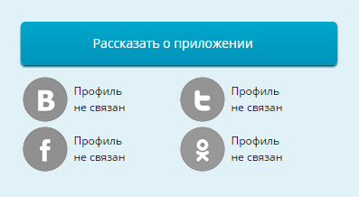
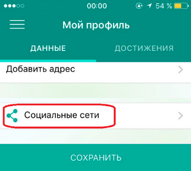

Ответы на часто задаваемые вопросы
Электронный дом
Общие вопросы
Опросы и информирования
Опрос это мероприятие по выявлению мнений по вопросам жизнедеятельности дома или благоустройства его придомовой территории. В рамках опроса может быть задано одновременно до 10 вопросов.
Опрос, например, можно инициировать для того, чтобы: выбрать старшего по подъезду/дому, определить удобное место и время проведения общего собрания, назначить удобную дату для проведения субботника или обсудить создание уюта в доме (размещение в подъездах цветов, украшение дома к праздникам, др.)
Информирование – это мероприятие по доведению информации о жизнедеятельности дома в целом или о благоустройстве его придомовой территории.
Информирование, например, можно инициировать для того, чтобы: оповестить о дате, времени и месте проведения субботника, оценить работу консьержа, дополнительно проинформировать собственников помещений о проведении общего собрания собственников.
Инициировать опрос или информирование может собственник помещения в доме, житель, зарегистрированный в этом доме по месту жительства, или индивидуальные предприниматели и организации, осуществляющие деятельность по управлению многоквартирными домами, ТСЖ, жилищные или жилищно-строительные кооперативы.
Для инициации опроса, информирования:
- - Зарегистрируйтесь в проекте «Активный гражданин», если у Вас нет профиля;
- - Свяжите профиль «Активного гражданина» с личным кабинетом на mos.ru;
- - Укажите в личном кабинете mos.ru ФИО, СНИЛС, паспорт и дату рождения. Убедитесь, что указанные данные прошли проверку;
- - Войдите в свой профиль на сайте ag.mos.ru. На главной странице выберите раздел «Электронный дом»,
- - Нажмите «Подать заявку на опрос» или «Подать заявку на информирование». Далее следуйте инструкциям.
Важно! Для подачи заявок на опросы, информирования убедитесь, что указанные на mos.ru данные прошли проверку.
Принять участие в опросе, информировании могут участники проекта «Активный гражданин», являющиеся:
- - собственниками помещений в доме,
- - нанимателями жилых помещений по договору соцнайма,
- - жителями
Аудиторию опроса устанавливает инициатор опроса, информирования.
Для участия в опросе, информировании:
- - Зарегистрируйтесь в проекте «Активный гражданин», если у Вас нет профиля;
- - Заполните поля: «Адрес места жительства», «Адрес регистрации» или «Адрес собственности».
- - Откройте голосование и выберите подходящий вариант /несколько вариантов ответа в опросе или «Нравится»/«Не нравится» для оценки информационного сообщения в информировании.
Важно! Текущие опросы или информирования станут доступны в разделе «Электронный дом» через 5 минут после заполнения адресов.
Важно! При желании оставьте комментарий (анонимно или представьтесь в тексте самого комментария), который будет виден только инициатору.
Важно! Участие в опросах анонимное. При желании можно указать номер своей квартиры. Он будет доступен только инициатору при формировании итоговых результатов.
Промежуточные итоги доступны на странице голосования после прохождения участником информирования или опроса. Финальные будут доступны всем участникам в разделе «Новости» после завершения голосования.
Опросы и информирования проводятся по тем адресам, которые указаны в профилях граждан системы «Активный гражданин». Процедура голосования аналогична городским голосованиям, которые проходят в системе «Активный гражданин».
Рассмотрение и одобрение заявки занимает до 5 рабочих дней.
О результатах рассмотрения и об открытии опроса инициатор опроса или информирования оповещается в системе «Активный гражданин» и по адресу электронной почты, указанному в заявке.
Согласно Постановлению Правительства Москвы от 27.02.2018 № 115-ПП «О реализации проекта «Электронный дом» (Постановление), причины отказа в размещении опроса или информирования на основании заявки следующие:
- - Заявка подана не уполномоченным на это лицом;
- - Заявка не соответствует положениям, определенным Постановлением реализации пилотного проекта «Электронный дом» и (или) Правилами использования информационной системы проекта «Активный гражданин» при реализации пилотного проекта «Электронный дом»;
- - Содержание опроса /информирования в заявке не относится к вопросам жизнедеятельности многоквартирного дома или благоустройства его придомовой территории и/или не соответствует формату предоставления информации, установленному в Правилах;
- - Содержание/суть опроса или информирования аналогично ранее направленному запросу;
- - Заявка содержит обвинения /оскорбления в адрес третьих лиц;
- - Заявка содержит информацию, направленную на пропаганду ненависти и дискриминации по расовому, этническому, половому, религиозному, социальному признакам, ущемление прав меньшинств, несовершеннолетних, а также информацию, причиняющую и призывающую к причинению вреда в любой форме.;
- - Заявка содержит персональные данные, распространяемые без согласия субъекта персональных данных;
- - Заявка содержит ошибки и/или опечатки, препятствующие пониманию ее смысла;
- - Заявка содержит нецензурную лексику либо ее производные;
- - Содержание опроса или информирования не соответствует составу его участников, указанному в заявке.
Вы можете ознакомиться с Постановлением и Правилами по ссылкам:
- - Постановление;
- - Правила.
Связать профили через сайт ag.mos.ru можно следующим образом:
- 1. Авторизуйтесь на сайте ag.mos.ru;
- 2. На странице профиля нажмите на поле «Связь с mos.ru»;
- 3. Укажите СНИЛС/номер телефона/адрес электронной почты и пароль от учетной записи на mos.ru;
- 4. Нажмите кнопку «Связать».
Связать учетные записи через мобильное приложение «Активный гражданин» можно следующим способом:
- 1. Авторизуйтесь в мобильном приложении;
- 2. Перейдите в главное меню и выберите пункт «Мой профиль»;
- 3. Нажмите на иконку «Редактирование профиля»;
- 4. Нажмите на поле «Связь с mos.ru»;
- 5. Нажмите кнопку «Связать профили»;
- 6. Укажите СНИЛС/номер телефона/адрес электронной почты и пароль от учетной записи на mos.ru;
- 7. Нажмите кнопку «Связать».
После успешного установления связи появится сообщение «Профили связаны».
Важно! Для подачи заявок на опросы, информирования убедитесь, что указанные на mos.ru данные прошли проверку.
В целях безопасности связь между профилями «Активного гражданина» и mos.ru актуальна в течении 4 часов с момента ее установления или обновления. Для подачи заявок на опросы, информирования по истечении указанного времени необходимо актуализировать установленную ранее связь.
Для актуализации связи:
- - В форме подачи заявки нажмите «Обновить»;
- - Укажите СНИЛС/номер телефона/адрес электронной почты и пароль от учетной записи на mos.ru;
- - Нажмите кнопку «Связать».
Общие собрания собственников
Общее собрание собственников - это орган управления многоквартирным домом.
Решения и протокол общего собрания собственников доме являются официальными документами как документы, удостоверяющие факты, влекущие за собой юридические последствия в виде возложения на собственников обязанностей в отношении общего имущества в доме, изменения объема прав и обязанностей или освобождения этих собственников от обязанностей.
Данные собственников, которые приняли участие в голосовании, будут проверяться на соответствие сведениям, содержащимся в государственных информационных системах города Москвы, в том числе в едином государственном реестре недвижимости (ЕГРН).
При проведении общего собрания собственников помещений через «Электронный дом» осуществляется дополнительное информирование собственников по e-mail или SMS.
Важно! Обязанность оповещения собственников инициатором, предусмотрена Жилищным кодексом РФ и в действующей редакции постановления Правительства города Москвы от 27.02.2018 №115-ПП с него не снимается.
Проведите внеочередное или ежегодное общее собрание собственников в доме для принятия следующих решений:
- - выбор в качестве информационной системы заочной формы голосования проект «Активный гражданин»;
- - определение Департамента информационных технологий города Москвы администратором общего собрания;
- - о порядке приема администратором сообщений о проведении общих собраний в форме заочного голосования, решений собственников помещений в соответствии с положениями, установленными Департаментом информационных технологий города Москвы;
- - о продолжительности голосования по вопросам повестки дня общего собрания в форме заочного голосования с использованием информационной системы проекта «Активный гражданин» в соответствии с положениями, установленными Департаментом информационных технологий города Москвы;
- - о согласии представления администратором общего собрания протокола общего собрания без приложения реестра собственников помещений в многоквартирном доме в целях защиты их персональных данных.
Важно! Примеры соответствующих формулировок вопросов повестки дня и решений по ним содержатся в приложении к Правилам
Не забудьте указать в протоколе контакты для связи!
- В соответствии с Жилищным кодексом РФ предоставьте протокол данного собрания в Мосжилинспекцию через свою управляющую организацию. Протокол рассматривается на предмет соответствия требованиям законодательству РФ в течение 10 рабочих дней с момента его поступления в Мосжилинспекцию.
- В течение 5 дней после рассмотрения протокола Мосжилинспекцией Департамент информационных технологий города Москвы включает дом в реестр домов, в которых общее собрание проводится с использованием проекта «Активный гражданин»!
Полные требования к проведению первого собрания собственников опубликованы в Правилах.
Реестр домов, выбравших «Активный гражданин» в качестве системы для проведения общих собраний собственников опубликован по адресу ag.mos.ru/house/reestr.
Если собственники провели собрание, но дом не опубликован в реестре, обратитесь в управляющую компанию или ТСЖ.
Отдать свой голос можно:
- - путем электронного голосования через систему «Активный гражданин»;
- - путем личной явки по адресу: Москва, Центросоюзный переулок, дом 13, строение 3, этаж 2 в срок, в течение которого проводится голосование.
Собственники могут принять решения по следующим вопросам:
- - реконструкция и капитальный ремонт многоквартирного дома (в том числе по вопросам формирования и использования фонда капремонта, получения кредита на капремонт);
- - строительство на придомовой территории и пределы использования земельного участка (например, оборудование детской площадки, ограничение въезда на участок многоквартирного дома и т. д.);
- - пользование общим имуществом (утверждение лиц, уполномоченных на заключение договоров об использовании общего имущества многоквартирного дома);
- - выбор способа управления многоквартирным домом;
- - текущий ремонт многоквартирного дома;
- - по организационным вопросам проведения заочного голосования, наделения полномочиями совета многоквартирного дома и его председателя;
- - по иным вопросам в соответствии с ЖК РФ.
Собрания собственников помещений в многоквартирном доме делятся на общие годовые (обязательные) и внеочередные. Общие собрания проводятся во втором квартале года, следующего за отчетным, либо в срок, установленный на общем собрании. В соответствии со ст. 45 Жилищного Кодекса Российской Федерации (далее – ЖК РФ) внеочередное собрание может быть проведено:
- - по инициативе любого собственника, при этом он должен подготовить документы для его проведения:
- - управляющая организация (п.7 ст. 45 ЖК РФ);
- - управляющая организация или правление ТСЖ, ЖСК, ЖК по инициативе собственников (п.6 ст. 45 ЖК РФ).
Уведомление о проведении собрания направляется всем собственникам не позднее, чем за 10 дней до его проведения заказным письмом или вручается под роспись. Иной способ уведомления может быть предусмотрен решением общего собрания. Уведомление должно содержать следующую информацию:
- - сведения об инициаторе собрания;
- - форма проведения собрания (очное, заочное или очно-заочное голосование);
- - дата, место, время проведения данного собрания или дата окончания приема решений собственников по вопросам, поставленным на голосование, и место или адрес, куда должны передаваться такие решения (при заочном голосовании);
- - повестка дня;
- - порядок ознакомления с информацией и (или) материалами, которые будут представлены на собрании, место или адрес, где с ними можно ознакомиться.
Количество голосов собственника на общем собрании определяется в следующем порядке:
1. Установить общее количество голосов собственников:
Общее количество голосов приравнивается площади помещений всех собственников в доме, из расчета 1 голос = 1 кв.м помещения, принадлежащего собственнику.
2. Установить количество голосов каждого собственника
Количество голосов, которым обладает собственник помещения равно доле собственника помещения в праве общей собственности на общее имущество;
Например, в доме площадь всех жилых и нежилых помещений составляет 1 000 м². Количество голосов – 1 000. Собственник жилого помещения площадью 50 м². обладает 50 голосами.
Подать заявку могут:
- - Физические лица - собственники помещений в многоквартирном доме;
- - Юридические лица - собственники помещений в многоквартирном доме;
- - Управляющая компания (по собственной инициативе или от имени инициативной группы собственников).
Для участия в общем собрании собственников через «Активный гражданин»:
- - Зарегистрируйтесь в проекте «Активный гражданин», если у Вас нет профиля;
- - Заполните поле: «Адрес собственности».
- - Свяжите профиль «Активного гражданина» с личным кабинетом на mos.ru;
- - Укажите в личном кабинете mos.ru ФИО, СНИЛС, паспорт и дату рождения. Убедитесь, что указанные данные прошли проверку;
- - Войдите в свой профиль на сайте ag.mos.ru. На главной странице выберите раздел «Электронный дом» и примите участие в общем собрании собственников помещений online.
Процедура проведения собрания собственников регулируется:
- 1. Жилищным кодексом Российской Федерации;
- 2. Постановлением Правительства Москвы от 27.02.2018 № 115-ПП «О реализации проекта «Электронный дом»;
- 3. Правилами использования информационной системы проекта «Активный гражданин» при реализации пилотного проекта «Электронный дом».
Как стать участником проекта «Активный гражданин»?
Для того чтобы зарегистрироваться с помощью сайта:
1. Зайдите на сайт http://ag.mos.ru.
2. На стартовой странице нажмите кнопку «Регистрация».
3. Введите свой номер мобильного телефона, отметьте пункт «Я согласен с условиями оферты» и нажмите кнопку «Зарегистрироваться».
4. На ваш телефон придет SMS-сообщение с паролем для входа, который необходимо ввести в поле «Пароль», а затем нажать кнопку «Войти».
5. Для того чтобы вам поступали не только общегородские, но и территориальные голосования, максимально заполните свой профиль.
Сменить пароль можно в профиле пользователя.
После этого вы сможете участвовать в голосованиях.
Для того чтобы зарегистрироваться с помощью мобильного приложения:
1. Скачайте приложение «Активный гражданин» на свой мобильный телефон (приложение поддерживает iOS, Windows Phone или Android).
2. При открытии выберите пункт «Регистрация», введите свой номер мобильного телефона, отметьте пункт «Я согласен с условиями оферты» и нажмите кнопку «Зарегистрироваться».
3. На ваш телефон придет SMS-сообщение с паролем для входа, который необходимо ввести в поле «Пароль», а затем нажать кнопку «Войти».
4. Для того чтобы вам поступали не только общегородские, но и территориальные голосования, максимально заполните свой профиль.
Сменить пароль можно в разделе«Настройки».
После этого вы сможете участвовать в голосованиях.
Для того чтобы набирать максимальное количество баллов, вам необходимо придерживаться следующих правил:
1. Максимально заполните ваш профиль. Укажите все возможные данные: ФИО, пол, дату рождения, семейное положение, адрес электронной почты и обязательно место жительства. Если вы укажете адрес в своем профиле, вам будут приходить не только общегородские голосования, но и территориальные, что даст вам возможность зарабатывать дополнительные баллы. Кстати, вы можете указать два адреса — регистрации и фактического места проживания, ведь голосования по каждому из этих адресов касаются именно вас. За заполненный профиль вас ждет 20 дополнительных баллов.
2. Не пропускайте ни одного голосования! Как правило, голосования длятся от двух недель до месяца, так что не забывайте регулярно заходить в приложение «Активного гражданина» или на сайт ag.mos.ru. Каждое общегородское голосование принесет вам 20 баллов, а территориальное — 5 баллов.
3. При регулярном посещении сайта или мобильного приложения вам также будут начисляться дополнительные баллы за активное участие — 3 балла в день.
4. Приглашайте своих друзей становиться по-настоящему активными москвичами — регистрироваться в «Активном гражданине» и участвовать во всех голосованиях. За каждого приглашенного в проект друга, если он прошел регистрацию, вам начисляется 5 баллов. Пригласить друзей можно с помощью приложения «Активный гражданин»: выбранным вами контактам в вашей телефонной книге будут отправлены SMS-сообщения с приглашением к регистрации*. Приглашенные вами друзья должны зарегистрироваться в течение 30 дней с момента получения SMS с тем же номером мобильного телефона, на который пришло приглашение.Обращаем ваше внимание, что в течение месяца максимально оплачивается 10 приглашенных друзей.
5. И не забывайте делиться результатами своих голосований в соцсетях! Для этого вам необходимо привязать аккаунт «Активного гражданина» к своей странице в социальной сети (Facebook, Twitter, «ВКонтакте» или «Одноклассники»), и ваши друзья будут видеть, когда вы голосуете в проекте. Вы можете как просто рассказать о проекте (оплачивается 1 пост для 1 соцсети, максимально — 4 поста для 4 соцсетей в месяц), так и поделиться фактом прохождения после каждого голосования (5 баллов за каждый пост, пока голосование активно).
*Отправка SMS осуществляется в соответствии с условиями вашего тарифного плана.
Чтобы войти в свой профиль с другого устройства, вам необходимо ввести свои данные (логин и пароль) в мобильном приложении «Активного гражданина» или на сайте ag.mos.ru. Напоминаем, что вашим логином является номер вашего мобильного телефона, начиная с префикса (например, 912 3456789).
Если вы удалили приложение с мобильного устройства или перешли на другое мобильное устройство, вам необходимо восстановить его (скачать заново или загрузить из «облака») и ввести заново свои логин и пароль. Приложение сохраняет существующий профиль и баллы. Обязательно укажите свой номер телефона — логин в АГ.
Если вам необходимо восстановить пароль для входа в профиль АГ через приложение, то:
1. Запустите приложение «Активный гражданин».
2. Если вы авторизованы, то выйдите из профиля. Для этого зайдите в раздел «Профиль» и нажмите «Выйти из профиля».
3. На главном экране приложения в нижней части нажмите на ссылку «Нужна помощь?» и во всплывающем меню выберите «Восстановление пароля».
4. На появившемся экране восстановления пароля введите номер мобильного телефона, для которого вы хотите восстановить пароль. Номер телефона вводите без кода +7, начиная с префикса 9...
5. Нажмите кнопку «Восстановить» и дождитесь получения SMS-сообщения с новым паролем.
6. Используйте полученный пароль для авторизации в мобильном приложении.
Обращаем ваше внимание, что максимальное время доставки SMS-сообщения составляет 1 час.
Если после восстановления у вас обнулились баллы, приложение выдает ошибку или появилась еще какая-либо проблема, пожалуйста, обратитесь в службу техподдержки проекта с максимально подробным описанием проблемы. Обязательно укажите свой номер телефона — логин в «Активном гражданине».
Вы можете самостоятельно деактивировать свой профиль, удалив из него все Ваши личные данные и отключив все подписки проекта «Активный гражданин»: ag.mos.ru/profile/subscription
Изменить номер телефона в АГ невозможно, можно только зарегистрировать новый аккаунт на новый номер телефона и перенести баллы.
Для этого, пожалуйста, зарегистрируйтесь на проекте АГ по новому номеру телефона. В разделе «Профиль» обязательно укажите ваш e-mail, который указан на старом аккаунте. После регистрации и указания e-mail вы получите письмо с необходимостью подтверждения вашего e-mail. Подтвердите e-mail, перейдя по ссылке и отправьте нам запрос с нового аккаунта, с указанием предыдущего номера обращения и ваших логинов (предыдущего и нового). Затем мы перенесем баллы.
Приглашать друзей к участию в проекте «Активный гражданин» можно с помощью мобильного приложения. На главном экране, который открывается при запуске приложения, в правом верхнем углу вы найдете иконку. При нажатии на нее система предупредит вас о том, что приглашения осуществляются с помощью SMS-сообщений. Кроме того, на этой же странице находится кнопка «Пригласить друзей», при нажатии на которую происходит то же самое. Обращаем ваше внимание, что SMS-сообщения оплачиваются согласно тарифам вашего оператора сотовой связи. За каждого прошедшего регистрацию друга начисляется 5 баллов при условии, что он зарегистрировался в проекте в течение 30 дней с момента получения им приглашения по тому же номеру мобильного телефона, на который было отправлено приглашение. Начисления производятся не более чем за 10 друзей в месяц. В последующих обновлениях приложения проекта «Активный гражданин» мы уберем функционал приглашения друзей с помощью SMS-сообщений и заменим его более удобным способом — по реферальной (специально созданной, уникальной) ссылке, которую можно будет отправлять по электронной почте.
Поля «Фамилия», «Имя», «Отчество» и e-mail обязательны для заполнения в том случае, если вы планируете в будущем заказывать поощрения в нашем магазине и получать призы за участие в наших акциях. Однако если у вас нет отчества, просто заполните данное поле символом «дефис» или напишите «нет». Система воспримет это как заполненное поле.
Некоторые голосования в проекте «Активный гражданин» касаются улицы, двора или даже отдельного дома. Мы уверены, что вы не хотели бы, чтобы вопросы, касаемые вашей улицы, решали люди, которые живут за 10 кварталов от вас. В качестве примера мы можем привести голосования в рамках акции «Миллион деревьев» от «Активного гражданина»: решение о том, какие дворы необходимо озеленять, принимается на основании голосов из конкретных домов.
Проект «Активный гражданин» использует справочник адресов, предоставленный МосгорБТИ. Если вашего дома на данный момент нет в этом справочнике, вы можете ввести адресные данные используя расширенную форму, которая вам будет предложена.
Данные вы можете изменить в разделе «Мой профиль». Если существующий адрес регистрации некорректен, нажмите на строку с его указанием, а затем нажмите на «Удалить адрес». После этого вы сможете добавить новый адрес. В строку «Улица» добавьте свою улицу и дождитесь, пока справочник определит ее как существующую. Тот же алгоритм предусмотрен для номера дома. После заполнения адреса нажмите кнопку «Сохранить». Если адрес регистрации совпадает с адресом вашего фактического проживания, отметьте этот пункт. Если адреса не совпадают, пройдите ту же процедуру в строке «Адрес проживания». В профиле пользователя на сайте вы можете воспользоваться функцией «Добавить адрес», а затем выбрать нужный в предложенном списке адресов.
Менять информацию об адресах регистрации, фактического проживания или работы, указанную в профиле участника проекта «Активный гражданин», вы можете не чаще чем раз в три месяца.
Пожалуйста, будьте внимательны при изменении адреса. Если вы действительно сменили адрес проживания, регистрации или работы более одного раза за три месяца, пожалуйста, обратитесь в службу технической поддержки.
Промокод можно ввести в приложении «Активный гражданин» или на сайте ag.mos.ru под своей учетной записью.
В приложении в разделе «Мои баллы» вы увидите надпись «Промокод» в правом верхнем углу экрана, нажмите на нее.
На сайте поле для ввода промокода вы найдете в «Профиле пользователя».
Для получения достижения месяца (Знака активности) вам необходимо принять участие во всех голосованиях, которые были закрыты в этом месяце. Так, например, если голосование было открыто 25 ноября и закрыто 16 декабря, то оно учитывается при начислении достижения (Знака активности) декабря.
При соблюдении всех условий бейдж начисляется автоматически в начале каждого месяца.
Данное правило касается только общегородских голосований. Обратите внимание, что вопросы, как правило, открыты в течение трёх недель. При регулярном посещении приложения или сайта «Активного гражданина» вы не пропустите ни одного голосования.
Ознакомьтесь с подробной инструкцией по связыванию профилей.
Общие вопросы
При регистрации в проекте пользователь имеет возможность заполнить поля в профиле, указать пол, возраст, место жительства или работы. Заполнение всех полей профиля не является обязательным для участников проекта. Вместе с тем, в зависимости от видов голосований, на проекте существуют различные уровни идентификации пользователей. Если профиль заполнен минимально, то принять участие можно только в голосованиях по общегородским вопросам. Указание в профиле адреса проживания позволит принимать участие в голосованиях по развитию округа и района. Высказать свое мнение в голосованиях по школьной и дошкольной тематиках могут только пользователи, указавшие в профиле наличие детей соответствующего возраста. Для участия с помощью проекта в решении вопросов, имеющих более высокую юридическую значимость, например, участия в публичных слушаниях, необходима идентификация пользователя самого высокого уровня – через его личный кабинет на портале государственных и муниципальных услуг города Москвы. Также в личном кабинете на этом портале пользователю необходимо указать ФИО, паспортные данные, сведения о прописке, СНИЛС. Эта степень защиты аналогична той, которая требуется для оформления денежных пособий в электронной форме. Указанный порядок позволяет обеспечить объективные и достоверные результаты голосований, защищенные от фальсификаций.
Для того чтобы принять участие в голосовании, вам следует зайти в раздел «Голосования» и нажать на заголовок вопроса. Если вы пользуетесь мобильным приложением - вам необходим экран «Голосования». Кроме того, все доступные голосования отображаются на экране «Активный гражданин», который автоматически открывается при входе в приложение.
Обязательно дойдите до последнего вопроса и завершите голосование, иначе ваше мнение не будет учтено.
Для доступа к территориальным голосованиям вам необходимо указать в своем профиле адрес регистрации и/или адрес фактического проживания. Территориальные голосования приходят пользователю согласно этим адресам. Получить доступ к голосованиям по районам, в которых вы не проживаете/не зарегистрированы, невозможно.
Голосования в «Активном гражданине» появляются в среднем 1—2 раза в неделю. Для того чтобы получить доступ к бОльшему количеству голосований, пожалуйста, заполните поле «Адрес регистрации» в своем профиле, и вам будут также приходить территориальные голосования. Если ваш адрес регистрации отличается от адреса фактического проживания, вы можете добавить два адреса и будете получать голосования по обоим.
Задаваемые в рамках проекта вопросы уже имеют несколько вариантов решения, возможных для реализации. Как правило, вопрос находится на управленческой развилке, и пользователям необходимо решить, какой из уже существующих вариантов будет в итоге принят органами власти. В некоторых голосованиях есть поле «Свой вариант», когда предполагается сбор дополнительных вариантов. В остальных голосованиях подобная функция отсутствует.
Обращаем ваше внимание, что специалисты проекта не определяют содержания голосований.
В рамках проекта «Активный гражданин» на голосование выносятся вопросы, относящиеся к компетенции Правительства Москвы и органов исполнительной власти города Москвы.
Каждый из органов исполнительной власти города Москвы действует в рамках своих полномочий, закрепленных нормативно-правовыми актами города Москвы.
Итоги голосований используются при принятии решений органами исполнительной власти города Москвы строго в рамках их компетенции, в соответствии с вариантами решений, которые наиболее востребованы москвичами.
Отбор вопросов для голосования на проекте осуществляется по ряду принципов:
- Вопрос обязательно должен относиться к компетенции органов власти города Москвы;
- На выбор москвичам предлагаются только те варианты решения, которые могут быть выполнены органом власти, к компетенции которого относится обсуждаемый вопрос, в т.ч. с учетом требований законодательства;
- Реализация предлагаемых решений должна быть обеспечена финансированием;
- Для участия в принятии решения предлагаются вопросы, не требующие специальных профессиональных знаний;
- Для более детального изучения вопроса и определения позиции по конкретному вопросу участникам проекта предлагается справочная информация, а также позиции экспертов, отражающие различные точки зрения.
Для того чтобы стать экспертом, пришлите, пожалуйста, на почту support@ag.mos.ru заявку. В ней укажите: ФИО, возраст, адрес проживания, образование, профессию и сферы интересов. Не забудьте указать номер телефона, по которому с вами можно связаться. Мы внесем вас в базу и, в случае необходимости, возьмем у вас интервью. Обязательно укажите в письме, что вы хотите стать экспертом в голосовании.
Свои отзывы и пожелания по работе проекта «Активный гражданин» вы можете оставить в разделе «Обратная связь» на сайте ag.mos.ru (нижняя часть страницы, по центру) и в приложении во вкладке «Справка/Отзыв» при выборе пункта «Обратная связь». Также по всем возникающим вопросам вы можете обращаться по адресу электронной почты support@ag.mos.ru.
На данный момент обращения пользователей принимаются только в письменном виде. По всем возникающим вопросам вы можете обращаться в «Обратную связь» на сайте и в приложении, а также по адресу электронной почты support@ag.mos.ru. Пожалуйста, включите в свое обращение всю имеющуюся у вас информацию. Чем больше мы будем знать подробностей, тем быстрее наши специалисты подготовят для вас ответ.
В момент регистрации на сайте или в приложении вы можете перейти по гиперссылке на полный текст оферты еще до того, как согласитесь на ее условия. Кроме того, вы можете ознакомиться с условиями оферты до начала регистрации — активная ссылка на полный текст находится в нижней части стартовой страницы сайта http://ag.mos.ru/. Текст расположен по адресу http://ag.mos.ru/site/offer#content
Регистрация участника в проекте «Активный гражданин» производится только по номеру вашего мобильного телефона, так как именно он является вашим основным идентификатором.
Проект «Активный гражданин» создан для жителей города Москвы, мы обсуждаем с горожанами повседневные исключительно городские вопросы: о том, как благоустроить городские улицы, какие кружки и секции открыть в ближайшем доме культуры, как наладить в Москве работу библиотек и поликлиник.
Если Вам интересна московская городская повестка и Вы живете жизнью города, Вы можете принимать участие в проекте и с «не московского» (любого российского федерального) номера. В среднем в общегородских голосованиях принимают участие 4-5% активных граждан с номерами телефонов, зарегистрированных в других регионах России, но это совсем не означает, что они не являются жителями Москвы. Федеральным законодательством закреплена возможность сохранения номера при переезде из региона в регион и смене мобильного оператора.
Вопрос о участии обладателей «не московских» телефонов в проекте «Активный гражданин» широко обсуждался на VII Гражданском форуме, прошедшем в Москве в декабре 2015 года. На круглом столе по электронной демократии, модератором которого выступил главред «Эха Москвы» А.Венедиктов, специалистами была озвучена рекомендация: не ограничивать возможности участия в проекте иногородних участников, но при этом подводить и публиковать итоги голосований с разделением категорий номеров «московский»/«не московский».
Начиная с декабря 2015 года Вы можете найти эти данные в любой публикации новостей об итогах голосования http://ag.mos.ru/news. Следует отметить, что в абсолютном большинстве прошедших голосований имеются сходные тренды в мнениях москвичей и обладателей «не московских» номеров телефонов. Однако, проект гарантирует своим участникам, что в случае существенных расхождений учитываться будут данные итогов голосования московских абонентов.
Результаты голосований
С результатами всех голосований вы можете ознакомиться на сайте и в приложении проекта «Активный гражданин» в разделе «Новости». Обращаем ваше внимание, что в данном разделе публикуются только окончательные результаты голосований.
Кроме того, вы можете оформить подписку на получение результатов голосований, принятых решений, исполненных решений и оповещений о новых вопросах. Рассылка возможна как по e-mail, так и с помощью push-уведомлений. Для подключения подписки необходимо зайти в раздел «Настройки» →«Подписки» в мобильном приложении или «Управление подписками» в профиле пользователя на сайте.
Текущий функционал проекта «Активный гражданин» не предусматривает повторного прохождения голосования. Если для вас затруднительно ответить на тот или иной вопрос в голосованиях, вы всегда можете нажать кнопку «Подробнее» прямо под формулировкой вопроса, чтобы подробнее ознакомиться с обозначенной темой. Кроме того, вы можете ознакомиться с мнением опрошенных нами экспертов.
Как только вы пройдете то или иное голосование, нажав кнопку «Завершить голосование», вы увидите экран с текущими результатами: общее количество проголосовавших и распределение голосов по всем вариантам ответа. Данные обновляются каждые 10 минут.
Со всеми результатами по решениям активных граждан вы можете ознакомиться на нашем сайте в разделе «Результаты работы» по адресу http://ag.mos.ru/results. Кроме того, у вас есть возможность подписаться на нашу рассылку с результатами работы проекта. Для этого выберите раздел «Настройки» →«Подписки» в мобильном приложении или «Управление подписками» в профиле пользователя на сайте и отметьте те пункты, по которым вы хотите получать оповещения.
Уникальный Идентификатор Пользователя
Уникальный идентификатор пользователя — это случайное число, которое раз и навсегда присваивается пользователю при регистрации в проекте «Активный гражданин». Этот идентификатор используется самим пользователем для проверки результатов своего голосования в общем массиве открытых данных со всеми результатами голосования. Также уникальный идентификатор пользователя могут попросить предоставить сотрудники службы технической поддержки проекта для дополнительной верификации пользователя.
Да, меняется, так как новый номер телефона предполагает новую регистрацию.
Нет, если вы НЕ регистрируетесь в проекте как новый пользователь, ваш идентификатор НЕ меняется.
Нет, если вы сами не передадите уникальный идентификатор третьим лицам.
Нет.
Ваш пароль
Текущий функционал проекта «Активный гражданин» предусматривает получение/восстановление пароля только с помощью мобильного телефона.
Для того чтобы получить пароль к уже существующему профилю:
На сайте проекта
1. Зайдите на сайт ag.mos.ru. Для неавторизованных пользователей на стартовой странице появится кнопка «Вход для пользователей» в правой верхней части экрана, нажмите на нее
2. В открывшемся окне выберите пункт «Восстановить пароль».
3. В появившемся поле с надписью «Телефон» введите номер своего телефона, на который зарегистрирован ваш профиль в «Активном гражданине» (логин). Номер телефона вводите без кода +7, начиная с префикса 9... и нажмите кнопку «Восстановить пароль». На указанный вами телефон придет SMS-сообщение с кодом. Обращаем ваше внимание, что максимальное время доставки SMS-сообщения составляет 1 час.
В мобильном приложении
1. Запустите приложение «Активный гражданин».
2. Если вы авторизованы, то выйдите из профиля. Для этого зайдите в раздел «Профиль» и нажмите «Выйти из профиля».
3. На главном экране приложения в нижней части нажмите на ссылку «Нужна помощь?» и во всплывающем меню выберите «Восстановление пароля».
4. На появившемся экране восстановления пароля введите номер мобильного телефона, для которого вы хотите восстановить пароль. Номер телефона вводите без кода +7, начиная с префикса 9...
5. Нажмите кнопку «Восстановить» и дождитесь получения SMS-сообщения с новым паролем.
Для того чтобы получить пароль при регистрации:
На сайте проекта
1. Зайдите на ag.mos.ru и нажмите кнопку «Регистрация».
2. В появившемся окне введите свой номер мобильного телефона и нажмите «Зарегистрироваться».
3. Дождитесь получения SMS-сообщения с паролем.
В мобильном приложении
1. Запустите приложение «Активный гражданин» и нажмите кнопку «Регистрация».
2. В поле «Номер телефона» введите свой номер мобильного телефона и нажмите «Зарегистрироваться».
3. Дождитесь получения SMS-сообщения с паролем.
Если вы воспользовались функционалом восстановления пароля несколько раз подряд, то вам следует дождаться получения последнего SMS-сообщения и использовать пароль, указанный в нем.
Если вышеуказанная инструкция вам не помогла, пожалуйста, обратитесь в служду технической поддержки проекта. Обязательно укажите свой номер телефона — логин в АГ.
Пожалуйста, попробуйте еще раз восстановить пароль согласно предложенной ниже инструкции.
Для восстановления пароля на сайте:
1. Зайдите на сайт ag.mos.ru. Для неавторизованных пользователей на стартовой странице появится кнопка «Вход для пользователей» в правой верхней части экрана, нажмите на нее
2. В открывшемся окне выберите пункт «Восстановить пароль»
3. В появившемся поле с надписью «Телефон» введите номер своего телефона, на который зарегистрирован ваш профиль в «Активном гражданине» (логин). Номер телефона вводите без кода +7, начиная с префикса 9..., и нажмите кнопку «Восстановить пароль». На указанный вами телефон придет sms-сообщение с кодом. Обращаем ваше внимание, что максимальное время доставки sms-сообщения составляет 1 час
4. Введите код из sms-сообщения в верхнее поле («Код подтверждения»), новый пароль для профиля - во второе поле («Введите новый пароль»), и повторите новый пароль для подтверждения в поле «Введите новый пароль повторно»
5. Используйте для авторизации новый пароль.
Для восстановления пароля в мобильном приложении:
1. Запустите приложение «Активный гражданин»
2. Если вы авторизованы, то выйдите из профиля. Для этого зайдите в раздел «Профиль» и нажмите «Выйти из профиля»
3. На главном экране приложения в нижней части нажмите на ссылку «Нужна помощь?», и во всплывающем меню выберите «Восстановление пароля»
4. На появившемся экране восстановления пароля введите номер мобильного телефона, для которого вы хотите восстановить пароль. Номер телефона вводите без кода +7, начиная с префикса 9...
5. Нажмите кнопку «Восстановить» и дождитесь получения sms-сообщения с новым паролем.
6. Используйте полученный пароль для авторизации в мобильном приложении или на сайте «Активный гражданин».
Если вы воспользовались функционалом восстановления пароля несколько раз подряд, то вам следует дождаться получения последнего sms-сообщения и использовать пароль, указанный в нем.
Если описанные выше действия не помогли - пожалуйста, обратитесь в службу техподдержки проекта с максимально подробным описанием проблемы. Обязательно укажите номер мобильного телефона-логин в «Активном гражданине».
Статистика по голосованиям
1. Зайдите на сайт ag.mos.ru.
2. Введите ваш логин (номер телефона) и пароль: а) если вы не можете вспомнить номер телефона, под которым вы регистрировались в системе «Активный гражданин», откройте мобильное приложение «Активный гражданин», кликните на кнопку в левом верхнем углу, которая открывает меню приложения, сверху будет ваш номер телефона; б) если вы не можете вспомнить пароль, который вы получали по SMS, откройте все ваши сообщения и введите в строку поиска латинские буквы EMP, откройте последнее сообщение от EMP, и вы увидите ваш пароль;
3. Перейдите в раздел «Голосования»→«Прошедшие».
4. Найдите (например) голосование «Станции «Войковские»: нужны ли новые названия» и зайдите в него. ОБЯЗАТЕЛЬНО убедитесь, что вы принимали участие в голосовании. Если это так, то вы увидите количество начисленных вам баллов за голосование, ваш ответ, выделенный жирным шрифтом, и кнопку «Поделиться» в самом низу страницы.
5. Теперь, для того чтобы увидеть свой голос в общем массиве данных, нажмите ссылку «Перейти по ссылке» в малиновом блоке, ваш голос будет подсвечен желтым. Если вы не принимали участие в голосовании, то вы увидите сообщение, что не принимали участие в голосовании.
1. Убедитесь, что вы открыли файл программой Microsoft Excel версии 2007 или выше. Произвести проверку можно с помощью подсчета строк, содержащихся в документе. Если их количество не совпадает с количеством проголосовавших, значит, ваша версия Exсel «обрезала» файл. Как правило, старые версии Excel показывают первые 65 536 строк. Так как количество голосующих по тому или иному вопросу в проекте, как правило, превышает 65 тысяч человек, ваш ответ, с большой долей вероятности, может быть обрезан. Второй вариант проверки: Пуск→Все программы→находите папку Microsoft Office, где вы сможете увидеть, какая версия у вас установлена. Не используйте другие программы, кроме Microsoft Excel, для открытия файла. Такие программы, как Open Office, Numbers и др., с большой вероятностью покажут только первые 65 тысяч строк.
2. Убедитесь в том, что вы скопировали ваш уникальный идентификатор в буфер обмена полностью, без пробелов или других символов. При необходимости удалите символы.
3. Убедитесь, что вы скопировали именно ваш идентификатор из своего профиля (не пытайтесь воспроизвести его на память, только через буфер обмена).
4. Убедитесь в том, что вы принимали участие в этом голосовании. Для этого на сайте или в приложении зайдите в раздел «Голосования→Прошедшие» и откройте интересующее вас голосование. Ваши ответы должны быть выделены жирным шрифтом.
1. Не пытайтесь скачать файл с мобильного телефона или с планшета, делайте это только со стационарного компьютера или ноутбука.
2. Попробуйте загрузить файл, используя другой интернет-браузер.
3. Используйте более быстрое интернет-соединение.
4. Если все равно не получается загрузить файл, пожалуйста, обратитесь к администратору вашей локальной сети или к интернет-провайдеру. Скорее всего, настройки вашего интернет-соединения не позволяют загружать файлы большого объема.
Нет.
1. Проверьте свои варианты ответов в разделе «Голосования»→«Прошедшие». Найдите и откройте интересующее вас голосование, ваши ответы должны быть выделены жирным шрифтом.
2. Убедитесь, что вы скопировали правильный идентификатор (не пытайтесь переписать его на память).
3. Убедитесь, что результаты, которые вы смотрите в файле, расположены напротив вашего идентификатора.
4. Убедитесь, что вы смотрите ответы в разделе «Голосования»→«Прошедшие» и скопировали уникальный идентификатор пользователя из-под одной учетной записи, а лучше всего (для избежания ошибок) с одного устройства.
mos.ru
На сайте mos.ru вам надо нажать на синюю кнопку «Перейти к опросам». Далее вам необходимо пройти регистрацию в проекте и заполнить ваш профиль на сайте ag.mos.ru. Напоминаем, что чем больше информации вы указываете о себе в профиле, тем больше голосований вам будет доступно.
Для решения проблемы с некорректным отображением баллов участника проекта «Активный гражданин» на mos.ru вам нужно связать учетные записи двух проектов. Обращаем ваше внимание, что данное решение работает только в том случае, если вы используете для входа в профиль mos.ru логин и пароль mos.ru. Связывание профилей для альтернативных способов авторизации на mps.ru (учетная запись Gosuslugi.ru, социальные сети, электронная подпись юридического лица) недоступно.
Для связи профилей на сайте выполните следующую последовательность действий:
1. Авторизуйтесь на сайте ag.mos.ru с использованием учетной записи проекта «Активный гражданин».
2. В разделе «Профиль пользователя» http://ag.mos.ru/profile обратитесь к функции привязки профиля mos.ru — кнопка «Связать профили» в правой нижней части экрана.
3. В открывшемся диалоговом окне введите логин и пароль от вашей учетной записи mos.ru и нажмите кнопку «Связать». По умолчанию вашим логином на mos.ru является адрес электронной почты, указанный в профиле в качестве псевдонима, даже если при входе в mos.ru вы используете СНИЛС.
4. После установки связи зайдите на mos.ru, авторизуйтесь и убедитесь, что количество баллов участника проекта «Активный гражданин» отображается корректно.
5. Если вы случайно установили связь не с тем профилем на mos.ru и хотите привязать другой профиль — нажмите кнопку «Связать с другим профилем».
Для связи профилей через приложение выполните следующую последовательность действий:
1. Перейдите в главное меню и выберите пункт «Мой профиль».
2. Выберите раздел «Связь с mos.ru».
3. Введите логин и пароль вашего аккаунта на mos.ru, нажмите кнопку «Связать». По умолчанию вашим логином на mos.ru является адрес электронной почты, указанный в профиле в качестве псевдонима, даже если при входе в mos.ru вы используете СНИЛС.
4. В случае успешной операции появится сообщение об установлении связи.
5. Если вы случайно установили связь не с тем профилем на mos.ru и хотите привязать другой профиль, нажмите кнопку «Связать с другим профилем».
Обратите внимание, что логин и пароль на mos.ru не должны содержать специальных символов. Для замены логина авторизуйтесь на mos.ru и войдите в личный кабинет с помощью ссылки в верхней части экрана справа. В случае если в вашем профиле указаны ФИО, эта ссылка будет содержать ваши ФИО.
Далее в разделе «Регистрационные данные» нажмите кнопку «Изменить данные». Вы увидите на экране несколько полей, которые следуют друг за другом. Первое — это фамилия, второе — имя, третье — отчество. В четвертом поле указана ваша электронная почта.
Далее идет пятое поле, справа от него вы можете видеть знак вопроса. При нажатии на него вы увидите всплывающее окно с заголовком «Псевдоним» — это и есть то поле, содержание которого необходимо скорректировать.
Далее укажите в пятом поле в качестве логина какой-либо псевдоним (сочетание латинских букв, без спецсимволов). После этого сделайте привязку профиля mos.ru к «Активному гражданину», в качестве логина используйте тот псевдоним, значение которого вы откорректировали ранее. Это временная мера, после установки связи вы снова можете вернуть старые логин и пароль, связь сохранится.
Поощрения и акции
Если вы видите надпись «Для заказа данного поощрения необходимо набрать 1000 баллов», значит вы еще не получили статус «Активный гражданин».
Для получения статуса «Активный гражданин» и возможности оформить заказ в «Магазине поощрений», необходимо набрать 1000 баллов. После того, как вы накопите нужную сумму, вы получите доступ к покупкам в «Магазине поощрений».
Следите за обновлениями, в «Магазине поощрений» возможны исключения для новичков – это поощрения, доступные всем участникам проекта. Они будут отмечены фразой «Доступно для заказа всем пользователям».
Для оформления заказа в Магазине поощрений вам необходимо заполнить поля «ФИО» и «Адрес электронной почты».
Все доступные для заказа поощрения вы можете найти в разделе «Магазин поощрений». Обращаем ваше внимание, что для оформления заказа вам необходимо указать ФИО и адрес электронной почты.
Вы можете приобрести сертификат на услугу или сувенир с символикой нашего проекта в подарок. Исключением являются парковочные баллы: профили в «Активном гражданине» и «Парковках Москвы» должны быть привязаны к одному номеру мобильного телефона, перевести баллы на другой аккаунт в «Парковках Москвы» невозможно.
Как правило, для получения двух и более билетов вам необходимо последовательно оформить два и более заказа. Один сертификат выдается на одного человека. При наличии необходимого количества баллов вы можете заказать сертификат для своего друга, родственника или знакомого. Сертификат будет оформлен на ваше имя, но по нему может пройти любой человек, так как действительность сертификата будет проверяться по цифро-буквенному коду.
Также, иногда в Магазине Поощрений встречаются парные позиции.
Информация об исключениях всегда указана в описании поощрения! Будьте внимательны!
Если вы сделали заказ в нашем Магазине поощрений и не забрали его из выбранного центра «Мои документы» в течение двух недель (в случае, если иной срок не указан в описании поощрения), ваш заказ автоматически аннулируется и все потраченные на него баллы будут списаны безвозвратно.
Если заказ был сделан на сувенирную продукцию, в течение этих двух недель вы можете самостоятельно отменить заказ. Достаточно выбрать необходимую позицию в списке оформленных заказов и нажать кнопку «Отменить заказ». Тогда бонусные баллы, заблокированные при бронировании данного поощрения, будут возвращены на ваш счет в течение часа. На сайте проекта вы можете это сделать, перейдя по ссылке «Магазин поощрений»→«История заказов». В приложении необходимо выбрать раздел «Магазин поощрений» и пункт «История заказов» в выпадающем списке вверху экрана. Возврат баллов вы можете проверить в разделе «Мои баллы».
Баллы по всем остальным позициям не возвращаются после подтверждения оформления заказа, так как эти заказы отмене не подлежат.
Если ваш заказ — это электронный сертификат, который пришел вам на почту и вы не использовали его в течение срока, указанного в письме от нашей системы, заказ также будет считаться аннулированным. Будьте внимательны при заказе!
Для электронных услуг (Парковочное пространство, пополнение карты «Тройка», Wi-Fi в метро без рекламы, пин-коды для получения подобных услуг и т.п.) — баллы списываются безвозвратно сразу после оформления заказа, информация о получении услуги направляется вам на почту.
В течение двух недель с момента заказа поощрения из категории «Сувениры» вы можете самостоятельно отменить заказ. Достаточно выбрать необходимую позицию в списке оформленных заказов и нажать кнопку «Отменить заказ». Бонусные баллы, заблокированные при бронировании данного поощрения, будут возвращены на ваш счет в течение часа. На сайте проекта вы можете это сделать, перейдя по ссылке «Магазин поощрений»→«История заказов». В приложении необходимо выбрать раздел «Мои баллы» и нажать кнопку «Магазин поощрений». Далее в выпадающем списке вверху экрана выберите пункт «История заказов». Убедиться в том, что ваши баллы вернулись на счет, можно в разделе «Мои баллы».
Если ваш заказ на сувенирную продукцию был аннулирован в связи с тем, что вы не забрали его из выбранного центра «Мои документы» в течение срока бронирования, потраченные на него баллы будут списаны безвозвратно. Если вы отменили заказ на сувенирную продукцию самостоятельно в течение двух недель с момента оформления, баллы вернутся на ваш счет в течение часа. ВНИМАНИЕ! Баллы, потраченные на поощрения, не относящиеся к категории «Сувениры», возврату не подлежат!
Если баллы не вернулись вам в течение недели, пожалуйста, обратитесь в службу техподдержки проекта. Максимально подробно опишите свою проблему и обязательно укажите номер заказа и номер телефона — логин в «Активном гражданине».
Для получения поощрения вам необходимо подойти к консультанту-помощнику на входе (далее – Консультант) и сообщить ему о своем намерении получить поощрение с символикой проекта «Активный гражданин».
Консультант, пользуясь терминалом регистрации со встроенным чековым принтером, выдаст вам талон с цифро-буквенным кодом (номером электронной очереди). Обратите внимание, что на каждое поощрение необходимо взять по одному талону. Сотрудник центра «Мои документы» в пункте выдачи, используя свой пульт управления табло, вызовет вас из электронной очереди по номеру чека, который выводится на центральном информационном табло и табло оператора.
Выдача поощрений осуществляется с 8.00 до 20.00 ежедневно.
Все поощрения из раздела «Сувениры» бронируются на 14 дней. Крайний срок получения заказа — последний день бронирования, до 20.00. В течение этого времени вы сможете забрать заказанное поощрение из выбранного центра «Мои документы». Обращаем ваше внимание, что в течение этих двух недель вы можете отменить заказ. Достаточно выбрать необходимую позицию в списке оформленных заказов и нажать кнопку «Отменить заказ». Заблокированные ранее бонусные баллы будут возвращены на ваш счет в течение часа. На сайте проекта вы можете это сделать, перейдя по ссылке «Магазин поощрений»→«История заказов». В приложении необходимо выбрать раздел «Магазин поощрений» и пункт «История заказов» в выпадающем списке вверху экрана.
В случае заказа поощрения из разделов «Парки» и «Музеи», а также билета на даблдекер из раздела «Транспорт», вам придет электронный сертификат, которым вы можете воспользоваться в течение 14 дней с момента оформления заказа.
В случае заказа поощрения из раздела «Театры» вам необходимо обменять электронный сертификат на билет в кассе театра за 7 дней до спектакля.
Парковочное пространство не имеет «срока годности».
Для того чтобы получить сувенир в другом пункте выдачи, необходимо отменить текущий заказ и оформить новый на другой Центр госуслуг. Для этого в разделе «Магазин поощрений»→«История заказов» необходимо нажать кнопку «Отменить заказ» и создать новый, на интересующую вас позицию в другом пункте выдачи.
На данный момент расширение списка адресов центров «Мои документы» с пунктами выдачи «Активного гражданина» не планируется в связи с экономией бюджетных средств. Список Центров госуслуг, которые вы можете выбрать для получения поощрения:
- — Центр госуслуг района Тимирязевский, ул. Тимирязевская, д. 8, к.1;
- — Центр госуслуг района Лианозово, ул. Абрамцевская, д. 3;
- — Центр госуслуг районов Северное Тушино и Южное Тушино, ул. Василия Петушкова, д. 13, к.1;
- — Центр госуслуг района Тропарево-Никулино, Вернадского просп., д. 97, к. 3;
- — Центр госуслуг района Богородское и Метрогородок, ш. Открытое, д. 8;
- — Центр госуслуг района Академический, ул. Новочеремушкинская, д. 23, к. 5;
- — Центр госуслуг района Москворечье-Сабурово, Пролетарский просп., д. 18;
- — Центр госуслуг района Марьино, ул. Совхозная, д. 41;
- — Центр госуслуг района Красносельский, ул. Верхняя Красносельская, д.3, стр.2;
- — Центр госуслуг района Арбат, пер. Сивцев Вражек, д. 20.
Забрать поощрение из центра «Мои документы» можете не только вы, но и члены вашей семьи, ваши коллеги, знакомые и даже курьер. Для получения заказа достаточно знать номер заказа и ФИО оформителя. Рекомендуем брать с собой распечатанное письмо с информацией о заказе.
Товар не подлежит возврату или обмену после подписания акта приема-передачи в Пункте выдачи поощрений. При подписании вы соглашаетесь с данным правилом, указанным в акте. Вы можете померить вещь на месте и, в случае если у вас есть претензии по качеству, размеру или цвету, отказаться от заказа и получить баллы обратно либо оформить отказ от товара и сделать новый заказ, нужного размера или цвета. Перед этим рекомендуем вам проверить наличие другого размера в Магазине поощрений.
Для направления повторного письма — подтверждения о заказе вам необходимо сформировать обращение в службу техподдержки с максимально подробным описанием проблемы. Обязательно укажите свой номер телефона, на который зарегистрирован ваш профиль в проекте и по которому специалисты смогут с вами связаться. Кроме того, укажите примерное время оформления заказа и новый адрес электронной почты. Сотрудники Магазина поощрений свяжутся с вами и решат этот вопрос. Обратите внимание, что для получения поощрения в центре «Мои документы» вам достаточно знать номер заказа и ФИО пользователя, оформившего данный заказ. Номер заказа вы можете найти вразделе «Мои баллы» во вкладке «Заблокировано» в мобильном приложении проекта. На сайте вы можете найти данную информацию в разделе «Магазин поощрений»→вкладка «Мои баллы».
Парковочные баллы
При покупке парковочного пространства вы получаете 100 парковочных баллов, которые появляются на вашем счету в приложении «Парковки Москвы». 100 парковочных баллов равны 100 рублям. Обращаем ваше внимание, что профили в «Активном гражданине» и «Парковках Москвы» должны быть привязаны к одному номеру мобильного телефона.
Если вы зарегистрированы в приложении «Парковки Москвы» и оба ваших профиля (парковочный и АГ) привязаны к одному номеру телефона, баллы поступят на ваш счет автоматически.
Если вы не зарегистрированы в приложении «Парковки Москвы», после покупки парковочных баллов в Магазине поощрений нашего проекта вам придет SMS-сообщение с пин-кодом. Для того чтобы использовать купленное парковочное пространство, вам необходимо скачать приложение «Парковки Москвы», ввести в поле «Логин» номер вашего мобильного телефона (обязательно тот, который вы используете в «Активном гражданине»), а в поле «PIN» — полученный пин-код. После этого на вашем счете в приложении появятся купленные парковочные баллы (100 парковочных баллов = 100 рублей).
К сожалению, перенести парковочные баллы на парковочный счет, привязанный к другому номеру мобильного телефона, невозможно. Ваши профили в «Активном гражданине» и «Парковках Москвы» должны быть привязаны к одному номеру мобильного телефона.
Вы можете отправить SMS-сообщение с текстом «PIN» (без кавычек) на бесплатный короткий номер 7757. Пароль придет вам в ответном SMS-сообщении.
Для того чтобы офомлять заказы в нашем Магазине поощрений, вы должны обладать статусом «Активный гражданин». Статус присваивается пользователю, который набрал первые 1000 баллов. Пока вы не набрали первую тысячу, заказ поощрений не будет вам доступен, несмотря на то что баллов для того или иного товара на счету достаточно.
Если вы уже являетесь обладателем статуса «Активный гражданин» и проблемы возникли на этапе оформления заказа, пожалуйста, обратитесь в службу технической поддержки проекта с максимально подробным описанием своей проблемы. Укажите ФИО, номер мобильного телефона, примерное время попыток оформления заказа и какая ошибка в итоге у вас возникла.
Если заказ прошел успешно, проверьте историю начисления ваших баллов в «Парковках Москвы» и сравните с датой списания баллов в «Активном гражданине».
Если баллы не поступили, обратитесь в техподдержку приложения «Парковки Москвы».
Обращаем ваше внимание, что если вы уже зарегистрированы в приложении «Парковки Москвы» по номеру мобильного телефона, который используется в качестве логина в «Активном гражданине», то купленные баллы автоматически переводятся на парковочный счет.
Если вы еще не зарегистрированы в приложении «Парковки Москвы», вам придет SMS-сообщение с пин-кодом и номером мобильного телефона (логин в АГ), для которого действует этот пин-код.
Перевод баллов на парковочный счет, привязанный к другому номеру мобильного телефона, невозможен.
К сожалению, баллы за ошибочно заказанное парковочное пространство не возвращаются. Будьте внимательны при оформлении заказа!
Рассылки от проекта
Подписаться на рассылку уведомлений о новых голосованиях вы можете в мобильном приложении проекта в разделе «Настройки». В «Настройках» вам следует выбрать раздел «Подписки», а затем - «Оповещать меня о новых голосованиях». Оповещения бывают двух видов: по электронной почте и с помощью push-уведомлений (специальные уведомления на вашем мобильном устройстве). При включении оповещения по e-mail уведомления будут поступать на адрес электронной почты, указанный в профиле.
Управлять подписками на сайте проекта вы можете в профиле пользователя в разделе «Управление подписками и уведомлениями».
Для того чтобы на ваш электронный адрес не поступали рассылки от проекта «Активный гражданин», вам надо отключить подписки в профиле пользователя. Для отмены подписки зайдите в раздел «Настройки» →«Подписки» в мобильном приложении или «Управление подписками» в профиле пользователя на сайте и выключите соответствующие оповещения.
Кроме того, вы можете воспользоваться активной ссылкой в каждом письме от команды проекта «Активный гражданин». Она находится в самом конце письма, в предложении «Вы получили это сообщение, так как являетесь зарегистрированным участником проекта «Активный гражданин». Если вы хотите отписаться, перейдите по ссылке». Система перенаправит вас на специальную страницу, где вы сможете отписаться от рассылок.
Если вы проверили данный раздел и отписались от рассылок, но письма все равно продолжают приходить — пожалуйста, обратитесь в службу техподдержки проекта с максимально подробным описанием, наши специалисты обязательно вам помогут. Помните, что без рассылки вы можете пропустить важное голосование или интересную акцию!
Социальные сети
Как связать профиль?
Зайдите в профиль пользователя на сайте ag.mos.ru и в разделе «Рассказать о приложении» выберите одну из социальных сетей:
или
В приложении проекта «Активный гражданин» в разделе «Мой профиль» нажмите на кнопку «Социальные сети»:
Напротив иконки выбранной социальной сети появится надпись «Профиль связан».
Адреса наших официальных страниц в социальных сетях:
«ВКонтакте» - http://vk.com/citizenmoscow
Facebook - https://www.facebook.com/citizenmoscow
Twitter - https://twitter.com/citizenmoscow
«Одноклассники» - http://ok.ru/citizenmoscow
«Instagram» - https://www.instagram.com/citizenmoscow
«YouTube» - https://www.youtube.com/channel/UC1snUVTmzK72iKWphN8B9yQ
Telegram - http://www.telegram.me/citizenmoscow
Размещение постов о проекте на ваших страницах в соцсетях не ограничено, однако получить дополнительные баллы за все посты вы не сможете. Начисление баллов происходит до четырех раз в месяц. При этом действует правило: одна соцсеть — один пост (+5 баллов).
Кроме этого, вы можете поделиться с друзьями фактом прохождения каждого голосования — система предложит сделать это сразу после ответа на последний вопрос. За пост в каждой соцсети вам будет начислено 5 дополнительных баллов.
Напоминаем, что вы можете привязать к своему профилю страницы в соцсетях Facebook, Twitter, «ВКонтакте» и «Одноклассники».
Обращение в техническую поддержку
Для устранения проблемы, необходимо обратиться по адресу support@ag.mos.ru или через раздел "Обратная связь".
При обращении в техническую поддержку через "Обратную связь", пожалуйста, подробно опишите вашу проблему, в тексте обязательно укажите номер мобильного телефона, который вы используете в качестве логина на проекте АГ и выберите тему обращения.
После того, как на указанную вами электронную почту поступит номер присвоенный обращению, ваша заявка будет принята в работу.
Срок ответа на обращение от 1 до 90 дней, в зависимости от указанной в вашем обращении проблемы..